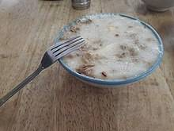

台灣美食
介紹
北部
中部
南部
東部
離島
嘉義火雞肉飯
根據地方耆老說法，二戰結束之後許多駐台美軍（主要為美國空軍）駐紮於此地區，美軍將火雞帶入之後，由台中附近地區養殖戶大量繁殖。因戰後各項物資缺乏，一般人要吃雞肉不容易，火雞較大，相對於土雞價格也低，營養價值也高，地方小吃攤想到用火雞當作小吃食材，因此做出類似滷肉飯之雞肉飯料理。傳統中台灣多拿雞胸肉蒸熟剝成雞絲或雞片鋪在飯上、澆上醬汁稱作雞絲飯或雞片飯，而北臺灣多採用家雞做成「雞肉飯」，且以雞絲飯為多，但不如嘉義雞肉飯有名。
台南碗粿
碗粿（臺灣話：uánn-kué[1]），或稱碗糕（臺灣話： uánn-ko），是流行於臺灣的米食製品。因成品置於碗內，故名；分甜、鹹二類：甜碗粿是米漿經糊化後拌入糖蒸熟而成；鹹碗粿則是將糊化的米漿蒸過一次，將配料鋪於其上再蒸熟而得，並搭配醬油膏或甜辣醬食用。

萬巒豬腳
萬巒豬腳是臺灣小吃，源自屏東縣萬巒鄉。據傳1981年1月2日，中華民國總統蔣經國視察萬巒舊市場，曾前來海鴻飯店品嘗豬腳，為萬巒豬腳打響知名度。